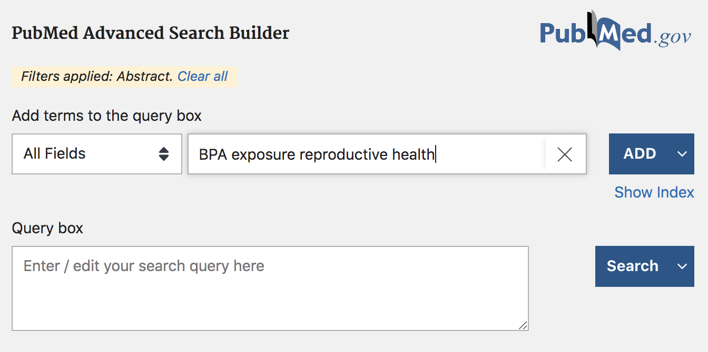
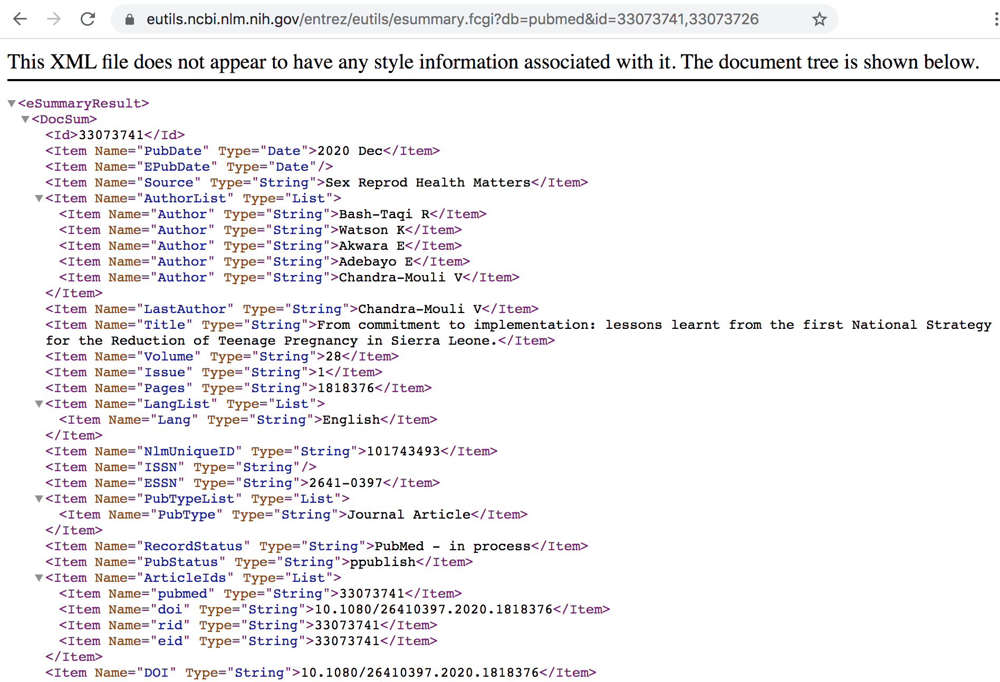

library(stringr) # for strings and regular expressions
library(xml2) # for parsing data in XML (e.g. HTML)
library(rvest) # for scraping XML and HTML content
library(tm) # for text mining
library(wordcloud2) # for graphing wordclouds (optional)12 PubMed API Example
In this chapter, we provide an example of web data collection from the database PubMed, using the Entrez Programming Utilities, commonly referred to as E-utilities, from the National Center for Biotechnology Information (NCBI).
You will need the following packages:
12.1 PubMed
PubMed (https://www.pubmed.gov) is a database of the largest collection of citations to medical journal literature in the world, and it is one of 38 databases built and maintained by the NCBI. Scientists, researchers, and users around the world use PubMed to search and retrieve bibliographic data, choose from several display formats, and share their results. Keep in mind that when people talk about PubMed, they could be referring to both the search interface and to the database itself.
PubMed’s website provides a search engine to obtain bibliographic information:

The simplest use of PubMed’s search engine is to provide a query, very similar to the queries that you would provide to google’s search engine. For example, we may be interested in looking for articles and other publications associated with some of the effects that exposure to Bisphenol A (BPA) has on reproductive health. Therefore, we can type in BPA exposure reproductive health inside the search box, and obtain some results (like those displayed in the screenshot below).

As of this writing (Fall 2020), there are 359 results that match the query term, with publications ranging from 1999 to end-of-2020. Notice that the webpage has a sidebar with checkboxes, and other intereactive options, that allow you to filter results by year of publication, by searching for the query in the abstract, or just in the titles, and things like that. As an example, we can move the slider for the year of publication to retrieve results that were published in 2018 and 2019 (see screenshot below)

If the obtained results are what you were looking for, you also have the option to download a CSV file with such results (download button in the navigation bar, above the barchart of years of publication).
In addition, you can perform a more advanced search by clicking on the “Advanced” button displayed below the search box. Clicking on this option will take you to a new page with more query boxes and a long list of query fields (screenshot below).

In the Advanced search mode, you can find a large list of fields that give you the opportunity to specify a more detailed query. For example, you can be more specific in your search by looking for results based on title, or based on author(s) information, or by date of publication, etc.
This way of interacting with PubMed (and similar databases) is how most users and researchers utilize PubMed: performing manual searches through their browsers, obtaining the results on their screens, and deciding which publications are worth further inspection. Sometimes, however, you may:
have a question that cannot be answered easily when you search PubMed,
need to see every citation in PubMed in a certain field,
need to run a search in PubMed and get the output in a CSV file that includes more (or different) data elements than the standard CSV file,
need to run specialized queries that might serve a very specific research need.
This is where E-utilities comes very handy because you can obtain the data that you need, and only the data that you need, in the format that you need. E-utilities is a great solution when you:
can’t find a good way to ask your question using the PubMed search box.
can search PubMed, but you’d like more, or less, or different data returned from the records.
want more control over the format of your PubMed data.
E-utilities is simply another way to search PubMed and the other NCBI databases. Formally, E-utilities is an Application Programming Interface (API) which allows you to control exactly what fields you are searching, the specific data elements you retrieve, the format of the data, and how you share your results. When you use E-utilities to access PubMed, you are accessing the same data that you would find at https://www.pubmed.gov.
12.2 Basics of E-utilities
E-utilities is the short name for the Entrez Programming Utilities, which is simply another way to search PubMed and other NCBI databases. The E-utilities website is:
https://www.ncbi.nlm.nih.gov/books/NBK25500/
which contains the official documentation, written and maintained by Eric Sayers.
According to the website:
“Entrez Programming Utilities (E-utilities) are a set of nine server-side programs that provide a stable interface into the Entrez query and database system at the National Center for Biotechnology Information (NCBI).”
What does this mean? E-utilities is basically an Application Programming Interface (API). The E-utilities API allows you to search PubMed and any other NCBI database through your own program: e.g. R, Python, etc. When you use E-utilities to access PubMed, you are accessing the same data that you’d find at https://www.pubmed.gov.
Note: the results returned by E-utilities queries of PubMed may differ slightly from those returned in the web version of PubMed. As of this writing (Fall 2020) a new PubMed API is currently under development.
The Nine E-utilities
The name E-utilities comes from the nine utilities (or programs):
EInfo (database statistics): Provides the number of records indexed in each field of a given database, the date of the last update of the database, and the available links from the database to other Entrez databases.
ESearch (database statistics): Responds to a text query with the list of matching UIDs in a given database (for later use in ESummary, EFetch or ELink), along with the term translations of the query.
EPost (UID uploads): Accepts a list of UIDs from a given database, stores the set on the History Server, and responds with a query key and web environment for the uploaded dataset.
ESummary (document summary downloads): Responds to a list of UIDs from a given database with the corresponding document summaries.
EFetch (data record downloads): Responds to a list of UIDs in a given database with the corresponding data records in a specified format.
ELink (Entrez links): Responds to a list of UIDs in a given database with either a list of related UIDs (and relevancy scores) in the same database or a list of linked UIDs in another Entrez database
EGQuery (global query): Responds to a text query with the number of records matching the query in each Entrez database.
ESpell (spelling suggestions): Retrieves spelling suggestions for a text query in a given database.
ECitMatch (batch citation searching in PubMed): Retrieves PubMed IDs (PMIDs) corresponding to a set of input citation strings.
For illustration purposes, we will only focus on ESearch, ESummary, and EFetch.
12.2.1 How does E-utilities work?
The way you use E-utilities is by assembling an e-utilities URL, following a specific set of rules, that you can use to make a request to one of its nine servers.
Behind the scenes, the assembled E-utilities URL is translated into a standard set of input parameters that are used as the values necessary for various NCBI software components to search for and retrieve the requested data. In other words, the URLs direct requests to servers that are used only by the E-utilities and that are optimized to give users the best performance.
Before making any requests, keep in mind the following recommendation:
“In order not to overload the E-utility servers, NCBI recommends that users post no more than three URL requests per second and limit large jobs to either weekends or between 9:00 PM and 5:00 AM Eastern time during weekdays.”
By the way, you can obtain an API Key offering you enhanced levels of supported access to the E-utilities. This is totally optional but worth knowing. In our examples, we won’t need an API key, but if you plan to use PubMed more intensively then consider getting an API Key.
API Requests
To make requests, you have to assemble a URL. Each URL consists of three parts:
The base URL: This is the address of the E-utilities server. Every URL begins with
https://eutils.ncbi.nlm.nih.gov/entrez/eutils/A utility name: This is the name of the specific tool that you are using. There are nine E-utilities and each one performs a specific function:
- ESearch: Search a text query in a single database and retrieve the list of matching unique identifiers (UIDs). In PubMed, ESearch retrieves a list of PMIDs.
esearch.fcgi? - ESummary: Retrieve document summaries for each UID.
esummary.fcgi? - EFetch: Retrieve full records for each UID.
efetch.fcgi? - EPost: Upload a list of UIDs for later use.
epost.fcgi? - ELink: Retrieve UIDs for related or linked records, or LinkOut URLs.
elink.fcgi? - EInfo: Retrieve information and statistics about a single database.
einfo.fcgi? - ESpell: Retrieve spelling suggestions for a text query.
espell.fcgi? - ECitMatch: Search PubMed for a series of citation strings.
ecitmatch.fcgi? - EGQuery: Search a text query in all databases and return the number of results for the query in each database.
egquery.fcgi?
- ESearch: Search a text query in a single database and retrieve the list of matching unique identifiers (UIDs). In PubMed, ESearch retrieves a list of PMIDs.
The file extension .fcgi? stands for Fast Common Gateway Interface.
- The parameters: These are the details of your query. Common parameters include the name of the database, your search terms, the number of results you would like to get, and the format of the output. The parameters that are available will change depending on the utility.
When you put these three parts together, you will have a URL that looks something like this:
https://eutils.ncbi.nlm.nih.gov/entrez/eutils/esearch.fcgi?db=pubmed&term=reproductive+AND+healthLet’s review three examples using utilities ESearch, ESummary, and EFetch.
Example: Searching PubMed with ESearch
Suppose we are interested in searching for bibliographic information in PubMed for the term reproductive health. Typically, the first thing to do when searching for information in PubMed is to retrieve a list of unique IDs for the documents that match the query text. All of this is done with ESearch, which means we need to use the esearch.fcgi? path to assemble the URL:
https://eutils.ncbi.nlm.nih.gov/entrez/eutils/esearch.fcgi?db=pubmed&term=reproductive+AND+healthThe above url uses the ESearch utility (esearch.fcgi?) and uses two query parameters, namely db and term.
https://eutils.ncbi.nlm.nih.gov/entrez/eutils/is the base URLesearch.fcgi?indicates the E-utility (ESearch in this case)db=pubmed: indicates that the searched database is PubMed.term=reproductive+AND+health: indicates that the searched involves the term reproductive health.notice the use of
&to include a new query parameter
By default, the information is retrieved in XML format (see screenshot below). If you scroll through the XML output you’ll see the number of records retrieved along with a list of unique document PubMed IDs (PMIDs) for those records.

Example: Retrieving records with EFetch
The ESearch URL retrieves a list of PMIDs—not full records. To get the full records you need to use EFetch—providing the list of IDs—and the URL would look something like this:
https://eutils.ncbi.nlm.nih.gov/entrez/eutils/efetch.fcgi?db=pubmed&id=33073741,33073726&retmode=abstract&rettype=texthttps://eutils.ncbi.nlm.nih.gov/entrez/eutils/is the base URLefetch.fcgi?indicates the E-utility (EFectch in this case)db=pubmed: indicates that the searched database is PubMed.id=33073741,33073726: includes the PMIDs of the records.retmode=abstract: indicates theabstractas the return mode.rettype=text: determines thetextas the return type format.

Example: Retrieving summaries with ESummary
The ESummary URL allows you to get the document summaries of the associated list of PMIDs, and the URL would look something like this:
https://eutils.ncbi.nlm.nih.gov/entrez/eutils/esummary.fcgi?db=pubmed&id=33073741,33073726https://eutils.ncbi.nlm.nih.gov/entrez/eutils/is the base URLesummary.fcgi?indicates the E-utility (ESummary in this case)db=pubmed: indicates that the searched database is PubMed.id=33073741,33073726: includes the PMIDs of the records.
The output of ESummary is a series of XML "DocSums" (Document Summaries), the format of which depends on the database. Below is an example DocSum for PubMed ID 33073741.

12.2.2 Searching PubMed from within R
Now that you have a basic understanding of PubMed, and the E-Utilities programs, let’s see how to make requests from R.
We are going to consider a typical pipeline that involves three steps:
use ESearch to get a list of document IDs (default output in XML)
parse the IDs from the XML document
pass the list of IDs to either EFetch or ESummary
Step 1: As a first step, we can define a character string entrez_url with the base URL, and three more strings for each of the E-utilities: esearch, efetch, and esummary:
# base URL, and paths of associated e-utilities
entrez_url <- "https://eutils.ncbi.nlm.nih.gov/entrez/eutils/"
esearch <- "esearch.fcgi?"
efetch <- "efetch.fcgi?"
esummary <- "esummary.fcgi?"Suppose we are interested in performing a search with the following parameters:
searching for the term BPA exposure reproductive health;
limiting our search to documents between 2018 and 2019
retaining at most the first 100 results
Step 2: We can assemble an R string params_esearch with all the previous ESearch query parameters:
# assembling string of parameters for the query
params_esearch <- paste0(
c("db=pubmed",
"term=BPA+exposure+reproductive+health",
"mindate=2018",
"maxdate=2019",
"retmax=100"),
collapse = "&")
params_esearch[1] "db=pubmed&term=BPA+exposure+reproductive+health&mindate=2018&maxdate=2019&retmax=100"Step 3: With the base URL, the esearch utility, and the parameters, we assemble the required URL that we can pass to read_xml(), and then use html_nodes() and html_text() to extract the list of documents IDs:
# assemble an esearch URL
ids_query <- paste0(entrez_url, esearch, params_esearch)
# Retrieving IDs with ESearch
ids_xml <- read_xml(ids_query)
# extract Ids (PMIDs)
ids <- html_text(html_nodes(ids_xml, xpath = "//Id"))The vector ids contains 94 retrieved document IDs, the first 5 and the last 5 five displayed below:
head(ids, 5)[1] "31771501" "31697385" "31683046" "31658598" "31648075"tail(ids, 5)[1] "29549734" "29428396" "29415642" "29385186" "29317319"Step 4: We can then use this list of IDs to assemble a URL for obtaining summary information of documents—via ESummary. Notice that Esummary uses different parameters from the ones used in ESearch. The query parameters in this case are db (name of database) and id (list of IDs). With the base URL, the esummary utility, and the parameters params_esummary, we assemble the required URL that we can pass to read_xml():
# parameters for esummary
params_esummary <- paste0(
"db=pubmed&id=",
paste(ids, collapse = ","))
# assemble an esummary URL
summaries_query <- paste0(entrez_url, esummary, params_esummary)
summaries_xml <- read_xml(summaries_query)Step 5: To inspect the XML output we can use functions from package "xml2" such as xml_child() for instance. Let’s take a look at the first node:
xml_child(summaries_xml, search = 1){xml_node}
<DocSum>
[1] <Id>31771501</Id>
[2] <Item Name="PubDate" Type="Date">2019 Oct</Item>
[3] <Item Name="EPubDate" Type="Date"/>
[4] <Item Name="Source" Type="String">Toxicol Ind Health</Item>
[5] <Item Name="AuthorList" Type="List">\n <Item Name="Author" Type="String ...
[6] <Item Name="LastAuthor" Type="String">Sun Z</Item>
[7] <Item Name="Title" Type="String">Oral exposure to low-dose bisphenol A i ...
[8] <Item Name="Volume" Type="String">35</Item>
[9] <Item Name="Issue" Type="String">10</Item>
[10] <Item Name="Pages" Type="String">647-659</Item>
[11] <Item Name="LangList" Type="List">\n <Item Name="Lang" Type="String">En ...
[12] <Item Name="NlmUniqueID" Type="String">8602702</Item>
[13] <Item Name="ISSN" Type="String">0748-2337</Item>
[14] <Item Name="ESSN" Type="String">1477-0393</Item>
[15] <Item Name="PubTypeList" Type="List">\n <Item Name="PubType" Type="Stri ...
[16] <Item Name="RecordStatus" Type="String">PubMed - indexed for MEDLINE</Item>
[17] <Item Name="PubStatus" Type="String">ppublish</Item>
[18] <Item Name="ArticleIds" Type="List">\n <Item Name="pubmed" Type="String ...
[19] <Item Name="DOI" Type="String">10.1177/0748233719885565</Item>
[20] <Item Name="History" Type="List">\n <Item Name="entrez" Type="Date">201 ...
...The obtained summary information contains various fields such as date of publication PubDate, list of authors AuthorList, title Title, starting and ending pages Pages, etc.
Step 6: To extract all the titles, we look for the Item nodes with argument Name="Title". To be more precise, we can define an XPath pattern '//Item[@Name="Title"]' for xml_nodes(), and then extract the content with xml_text():
title_nodes <- xml_nodes(summaries_xml, xpath = '//Item[@Name="Title"]')Warning: `xml_nodes()` was deprecated in rvest 1.0.0.
ℹ Please use `html_elements()` instead.titles <- xml_text(title_nodes)
head(titles)[1] "Oral exposure to low-dose bisphenol A induces hyperplasia of dorsolateral prostate and upregulates EGFR expression in adult <i>Sprague-Dawley</i> rats."
[2] "Juvenile Toxicity Rodent Model to Study Toxicological Effects of Bisphenol A (BPA) at Dose Levels Derived From Italian Children Biomonitoring Study."
[3] "Bisphenol F exposure impairs neurodevelopment in zebrafish larvae (Danio rerio)."
[4] "Effects of Dietary Bisphenol A on the Reproductive Function of Gilthead Sea Bream (<i>Sparus aurata</i>) Testes."
[5] "Urinary bisphenol A concentration is correlated with poorer oocyte retrieval and embryo implantation outcomes in patients with tubal factor infertility undergoing in vitro fertilisation."
[6] "In utero exposure to persistent and nonpersistent endocrine-disrupting chemicals and anogenital distance. A systematic review of epidemiological studies†." Finally, we can make a wordcloud. The code below has a series of commands to perform some text processing (with functions from the text mining package "tm") with the main terms or words used to create the wordcloud.
# title words
twords <- unlist(str_split(titles, " "))
twords <- tolower(twords)
# auxiliary vector of stop words
stop_words <- c(
stopwords(kind = "en"),
c("bisphenol", "exposure", "reproductive", "health", "bpa")
)
# removing unnecessary things
twords <- removePunctuation(twords)
twords <- removeNumbers(twords)
twords <- removeWords(twords, stopwords(kind = "en"))
twords <- removeWords(twords, stop_words)
twords <- twords[twords != ""]
# data frame of terms and frequencies
dat_words <- as.data.frame(table(twords))
dat_words <- dat_words[order(dat_words$Freq, decreasing = TRUE), ]
head(dat_words, n = 10) twords Freq
161 effects 18
500 study 10
519 toxicity 9
313 male 8
192 f 7
197 female 7
303 levels 7
464 s 7
173 environmental 6
180 estrogen 6and then plotting a wordcloud with the function wordcloud2() from the package "wordcloud2":
wordcloud2(dat_words)